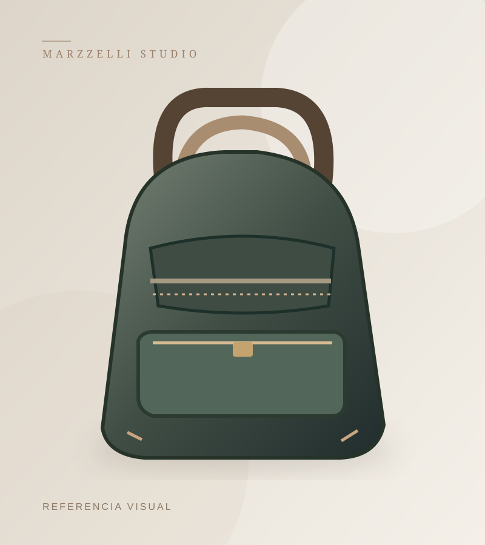

CONFECCIÓN PERUANA · CUERO Y TEXTIL
Diseño que se lleva.
Diseño que se lleva.
Calidad que se siente.
En MARZZELLI confeccionamos carteras, mochilas, calzado y accesorios para dama y caballero. Descubre nuestra colección de artículos en cuero, textil o combinaciones de ambos.
08 Líneas del catálogo
02 Materiales destacados
MARZZELLI COLECCIÓN DE PRODUCTOS

EXPLORA NUESTRAS LÍNEAS
Un producto para cada momento.
Descubre nuestras categorías para el uso diario, la oficina y las ocasiones especiales. También puedes ver la línea de calzado.
NUESTRAS COLECCIONES
Un estilo para cada historia.
Dos universos, una misma dedicación al detalle.
COLECCIÓN DAMA
Elegancia cotidiana
Conocer modelos ↗COLECCIÓN CABALLERO
Carácter y funcionalidad
Conocer modelos ↗Imágenes referenciales. Materiales, modelos y disponibilidad sujetos a confirmación.
SELECCIÓN MARZZELLI
Ver catálogo completo ↗Descubre nuestras propuestas.
FABRICACIÓN Y DISEÑOCuero y textil.
Cuero y textil.
Una misma pasión.
Fabricamos artículos que reúnen utilidad, diseño y atención al detalle. Conoce las líneas de productos que forman parte de MARZZELLI.
Conoce nuestra historia →MARZZELLI
CUERO
TEXTIL
DISEÑO
¿TIENES UNA CONSULTA?
Ir a contacto →Estamos listos para conversar.
Selecciona modelos y prepara una consulta referencial desde nuestra web.